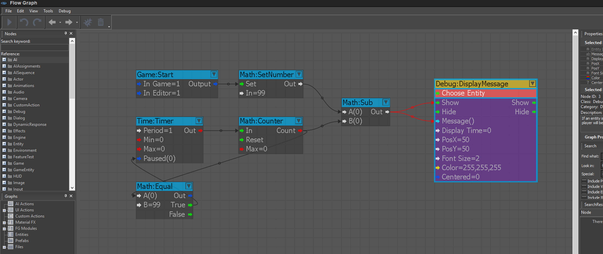

Цели
Целью руководства по написанию сценариев является научить вас использовать визуальные сценарии Flow Graph для подключения игровой логики и хранения переменных.
Цели
Изучив это руководство, разработчики узнают следующее:
Как изначально соединить узлы
Как использовать отладчик и точки останова
Как создать счетчик с отладочным текстом
Как запускать события
Как использовать модули Flow Graph